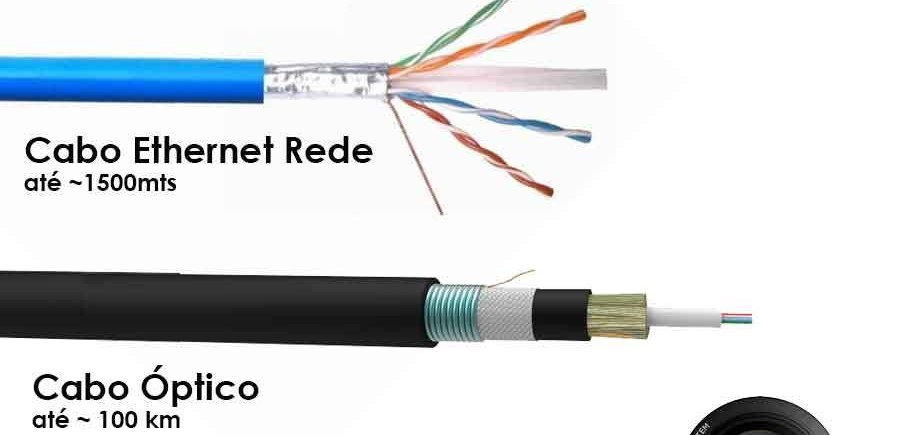
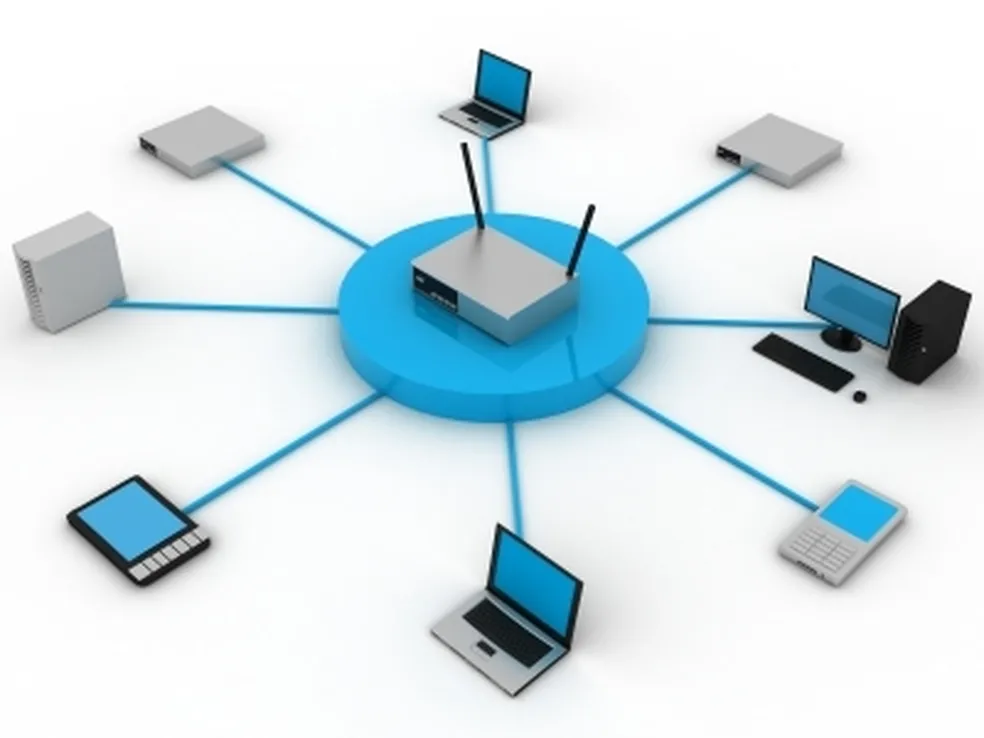

Nessa aba você verá os principais tópicos sobre a Evolução dos Meios de Redes, focando nos meios físicos usados para a transmissão de dados ao longo do tempo:
Na fase inicial das redes, cabos coaxiais, fios de cobre (par trançado) e linhas telefônicas foram fundamentais para viabilizar conexões locais e ponto a ponto, apesar de suas limitações em largura de banda e suscetibilidade a interferências, com o par trançado evoluindo para se tornar o padrão das redes Ethernet modernas.

Com a adoção da fibra óptica nos backbones e redes corporativas, a evolução dos cabos de par trançado (como Cat5, Cat5e, Cat6) nas LANs e a popularização do ADSL e da Internet a cabo nas residências, as redes passaram a contar com maior alcance, menos interferência e velocidades muito superiores, marcando uma nova era de conectividade eficiente e acessível.
Com a evolução do Wi-Fi, o avanço das redes móveis como 4G e 5G, e a adoção de tecnologias como Bluetooth, Zigbee, LoRa e NB-IoT para conectar dispositivos com baixo consumo de energia, as redes passaram a oferecer mobilidade, ubiquidade e capacidade de suportar milhões de dispositivos simultaneamente, impulsionando a era da conectividade inteligente e contínua.
